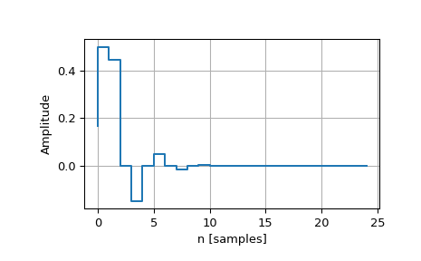

scipy.signal.dimpulse¶
-
scipy.signal.dimpulse(system, x0=None, t=None, n=None)[source]¶ Impulse response of discrete-time system.
- Parameters
- systemtuple of array_like or instance of
dlti A tuple describing the system. The following gives the number of elements in the tuple and the interpretation:
1: (instance of
dlti)3: (num, den, dt)
4: (zeros, poles, gain, dt)
5: (A, B, C, D, dt)
- x0array_like, optional
Initial state-vector. Defaults to zero.
- tarray_like, optional
Time points. Computed if not given.
- nint, optional
The number of time points to compute (if t is not given).
- systemtuple of array_like or instance of
- Returns
- toutndarray
Time values for the output, as a 1-D array.
- youttuple of ndarray
Impulse response of system. Each element of the tuple represents the output of the system based on an impulse in each input.
See also
Examples
>>> from scipy import signal >>> import matplotlib.pyplot as plt
>>> butter = signal.dlti(*signal.butter(3, 0.5)) >>> t, y = signal.dimpulse(butter, n=25) >>> plt.step(t, np.squeeze(y)) >>> plt.grid() >>> plt.xlabel('n [samples]') >>> plt.ylabel('Amplitude')
